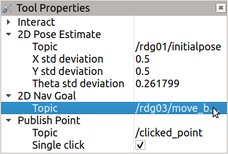

Installation Instructions¶
Install ridgeback and multi-ridgeback packages:
Install the ridgeback simulation and navigation packages by clearpath robotics using the bash commands in the terminal.
sudo apt-get install ros-melodic-ridgeback-simulator ros-melodic-ridgeback-desktop ros-melodic-ridgeback-navigationTo learn about using these packages check out the tutorials by Clearpath Robotics.
Install rospackage for teleoperation from terminal.
Clone the multi_ridgeback_gazebo ROS package into the src directory of your catkin_ws and run catkin_make from the root of your catkin_ws.
mkdir -p ~/catkin_ws/src cd ~/catkin_ws/src git clone https://contact/n.n.nagda@tudelft.nl/for/access.git cd .. catkin_make
Note
To confirm the installation uptil this point, run the following roslaunch command in a terminal.
roslaunch multi_ridgeback_gazebo multi_ridgeback_world.launchThis should launch a gazebo simulation with 2 ridgebacks that can be teleoperated using the teleop nodes running in the launched terminals. Also, an instance of Rviz is launched, wherein you can visualize their laserscans and the TF tree.
Clone the multi_ridgeback_nav ROS package into the src directory of your catkin_ws and run catkin_make from the root of your catkin_ws.
cd ~/catkin_ws/src git clone https://contact/n.n.nagda@tudelft.nl/for/access.git cd .. catkin_make
Note
To confirm the installation uptil this point, run the following roslaunch command in a terminal.
roslaunch multi_ridgeback_nav multi_ridgeback_nav.launchThis should launch a gazebo simulation with 3 ridgebacks and an instance of Rviz to issue navigation goals. Additionally terminals are also launched to manually operate the robot if it is stuck. The 3 ridgebacks have IDs as rdg01 rdg02 and rdg03 respectively and their nodes and topics are live under those namespaces respectively. The 2d Nav Goal tool from the tool ribbon can be used to issue navigation goals to the respective robot by setting the current topic name for it in the tool properties.
setting 2D Nav Goal topic¶ 
 
Right click on 2D Nav Goal tool and click on tool properties Click the 2D Nav Goal topic Set the correct robot ID in the 2D Nav Goal topic base namespace
Install sfm_pmdm package including dependencies see SFM-MPDM.
{kind=link}
Installing dependency libraries
sudo apt-get install libopenblas-dev liblapack-dev libarpack2-dev libsuperlu-devInstalling Armadillo C++ library
Clone obstacle_detector package into catkin workspace and catkin_make.
Install pygame
sudo apt-get install python-pygameClone sfm_mpdm ROS package in the src directory of your workspace.
Build the multi_robot_sim ROS package.
Clone the repository into the src folder of your catkin_ws.
Install PyQt4 (Python bindings for Qt) by running the following bash command in a terminal.
sudo apt-get install pyqt4-dev-tools pyqt4.qsci-dev libqt4-dev python-qt4
Install the documentation generation tools
Install rosdoc_lite ROS package using the following bash command in a terminal.
sudo apt-get install ros-melodic-rosdoc-liteThis automatically installs doxygen, sphinx and epydoc.
Install sphinx-rtd-theme, a sphinx extension that provides a beautiful theme for documentation.
python2 -m pip install --user sphinx-rtd-themeInstall catkin-sphinx, a sphinx extension that provides a ROS theme for documentation.
python2 -m pip install --user catkin-sphinx